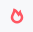

Intel® Graphics Performance Analyzers
Use Graphics Frame Analyzer to locate GPU bottlenecks, root-cause rendering issues, and increase performance.
Graphics Frame Analyzer is the tool to use once you have determined your application to be GPU-bound and have ruled out other issues, such as CPU-side code inefficiency and synchronization, using System Analyzer and Graphics Trace Analyzer.
To profile your game using Graphics Frame Analyzer, you first need to capture a frame or a stream.
A frame is a capture of all GPU activity and resources involved in rendering one frame.
Use frames when you are only interested in the rendering performance of one specific frame.
A stream is a consecutive set of frames, each of which contains all information that a typical frame contains, as well as pipeline and hardware metrics.
Use streams when you would like to analyze the behavior of a frame relative to other frames, select the slowest frame out of a scene, or troubleshoot frame time fluctuations.
To capture and open a frame:
Run Graphics Monitor on your system and specify an application for analysis.
Select the Frame [DX11] startup mode for DirectX 11 applications.
Select the Frame [DX12] startup mode for DirectX 12 applications.
Click Run Application to run your application.
The application launches with the HUD Overlay enabled.
Press Ctrl+Shift+C to capture a frame.
You can capture as many frames as needed without restarting the application.
If HUD hot keys interfere with game keyboard usage, you can:
Use Capture Frame button in the System Analyzer.
Once you finish, select the Frames and Streams tab in the Graphics Monitor and open the frame using either of these options:
Double-click the thumbnail.
Click the Open Frame button.
Use the Open File ribbon of the Graphics Monitor window.
Launch Graphics Frame Analyzer and select a frame to open.
To capture and open a stream:
Run Graphics Monitor and specify and application for analysis.
Select the Stream startup mode.
Click Run Application to run your application.
The application launches with the HUD Overlay enabled.
By default, stream capture starts immediately when the application is started.
You can enable the Defer Stream Capture option in the Stream Capture Options to start and stop stream capture manually.
If this option is enabled, locate a scene of interest and press L to start and stop stream capture.
Once you are done, select the Frames and Streams tab in the Graphics Monitor and open the stream using either of these options:
Double-click the thumbnail.
Click the Open Stream button.
Use the Open File ribbon of the Graphics Monitor window.
Launch Graphics Frame Analyzer and select a stream to open.
Once you open a stream, the Graphics Frame Analyzer Multi-Frame View is shown.
There are several sources of information available in this view:
Stream Viewer pane:
Available Information:
This pane shows a bar chart representation of frames that were captured into this stream, as well as multiple hardware and pipeline metrics.
Each bar on the top track represents a frame, with its height representing the GPU Elapsed Time, the time it took to render this frame.
The combination and granularity of metrics in this view is influenced by the Metric Set and the GPU Sampling Interval options of the Graphics Monitor options Metrics tab. A smaller sampling interval allows for finer metric granularity, but increases overhead.
The pane also features timestamps for end points of execution of each command list within a frame. The timestamps are shown in the form of vertical lines that span across the Stream Viewer pane.
Potential Insights:
You can use the frame time bar chart to select the longest frame and open it for deeper analysis. You can also use screenshots to keep track of notable scene changes.
If there are sporadic performance issues across several frames, or if you suspect that a previous frame influences the next one in a negative way, you can select multiple frames and open them simultaneously, concatenating all information. This can also be useful if there are calculations done every other frame.
If you decided to collect metrics with fine granularity, you can zoom into a frame and correlate low-level activity on the GPU with debug regions and command lists execution within a frame. If you decide that the metric values within a debug region look abnormal, you can open the frame for analysis and focus on the problematic region straight away.
Stream Content pane:
Available Information:
This pane shows a list of all frames collected into this stream, as well as separation by command queues. For example, if your application features separate Render and Compute queues, both queues are shown as tabs on the Stream Content pane.
You can expand each frame to see debug regions and command lists in each frame. Click on a debug region or command list to highlight it on the bar chart.
Potential Insights:
You can use this pane to navigate around the stream and track execution of debug regions and command lists within them.
For more information on this view, see the Multiframe View UI Reference topic.
Once you have a frame to analyze, either open this frame directly or select it from a stream.
Once you open a frame, note the following elements:
The Bar Chart shows all draw calls within a frame. By default, the Y axis is the GPU Duration, so the higher the bar, the longer the draw call took to execute.
The Main Toolbar contains data about the duration of the entire frame and the current selection. These values are recalculated dynamically when you make any changes that save or add frame time, such as applying experiments or modifying shader code. Pay attention to this block when applying experiments or trying shader code changes in real-time, as a potential time gain will be shown there.
The Resources pane shows all resources related to the current selection.
The Metrics pane shows the most likely bottleneck for the currently selected draw call or group, and offers advice on resolving the issue. Bottlenecks are marked with a colored hot spot icon on the left:
 indicates a primary bottleneck.
indicates a secondary bottleneck.
Depending on your profiling needs, there are multiple ways to approach a problematic frame:
Start optimizing based on hardware bottlenecks:
To do this, enable the Advanced Profiling Mode. This mode groups draw calls by hardware bottlenecks, which enables you to focus on issues that are common across multiple draw calls.
Click on a bottleneck group to see the bottleneck in the Metrics pane and get advice on resolving the issue:
You can then work over the groups of draw calls and resolve the root causes of the bottlenecks. This may produce a large positive performance impact, since you can apply optimizations that commonly affect a large group of draw calls each time.
Start optimizing based on debug regions:
If your application features debug regions, you can enable their display in Frame Analyzer and work by optimizing known logical portions of frame rendering.
You can also group draw calls by debug regions by using the Group By drop-down menu, thus combining all draw calls from this region into one bar on the bar chart. This enables you to focus on entire logical portions of your frame, such as light rendering or shadows.
Grouping-independent approaches:
You can use Render State Experiments to experiment with your graphics pipeline without code modifications. For example, you can replace a texture with a simple 2x2 texture to check if an overly complex texture has a large performance impact.
If you suspect a problem with a specific domain, such as Shader Execution, you can focus on optimizing this domain. For example, for shaders, you can edit shader code in real time without recompiling the application, and instantly see the performance and visual impacts in Frame Analyzer.
Related information